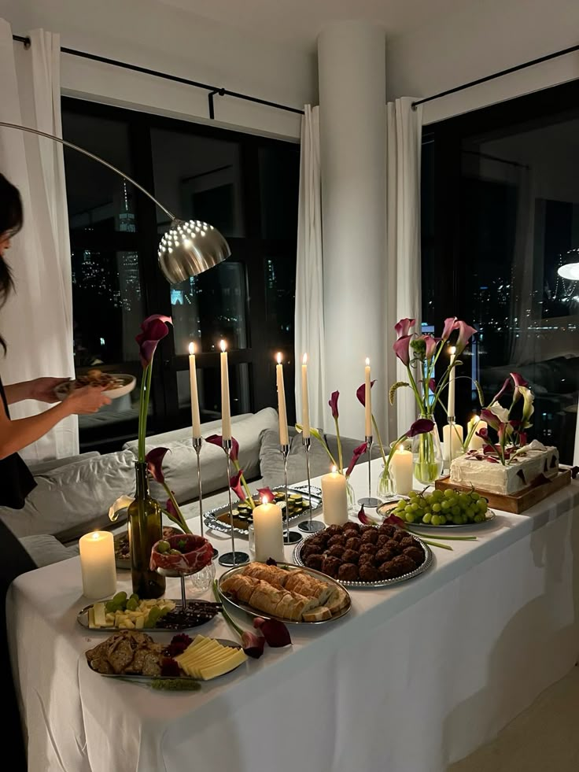
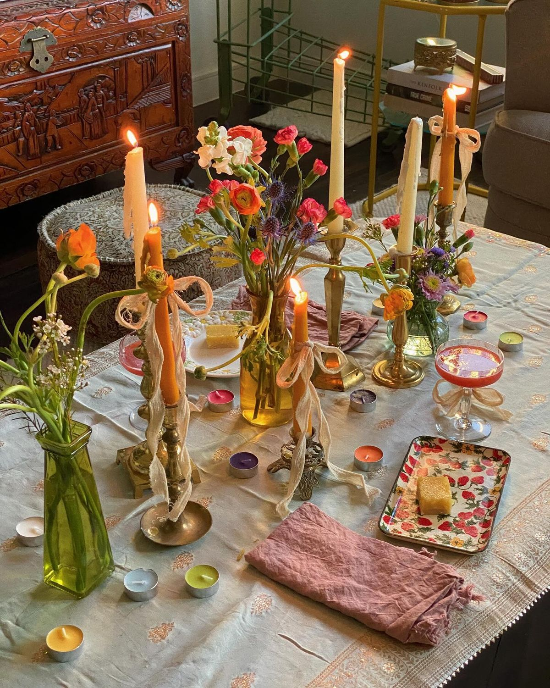
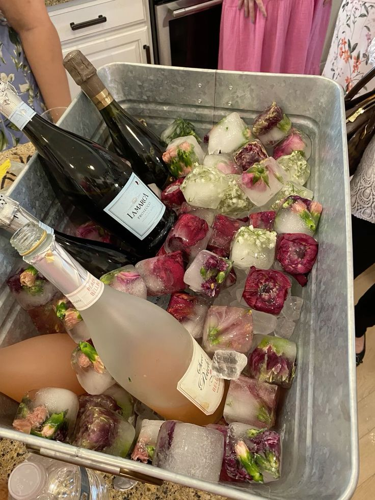
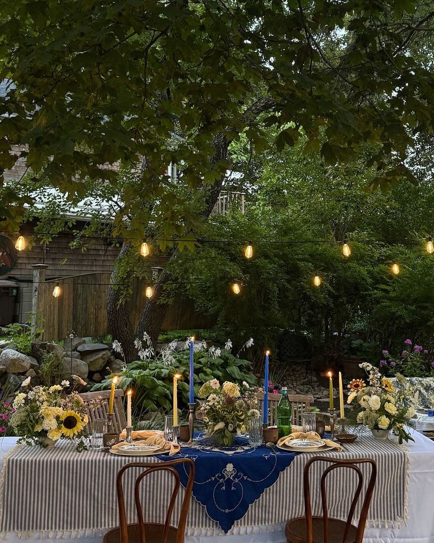

How to Host the Perfect Dream Dinner Party
Hosting a dinner party is more than preparing food—it’s about creating an atmosphere where people feel comfortable, inspired, and connected. A thoughtfully set table, warm lighting, and carefully chosen music can transform an ordinary evening into something unforgettable. Whether you’re inviting close friends or celebrating a special occasion, the small details often make the biggest impact.
Start with a simple seasonal menu that allows you to spend less time stressed in the kitchen and more time enjoying your guests. Fresh pasta dishes, roasted vegetables, artisan bread, and shareable desserts create a relaxed yet elevated experience. Preparing elements ahead of time can make hosting feel effortless and enjoyable.

The visual experience matters just as much as the meal itself. Layer neutral linens with textured plates, soft candlelight, and fresh flowers to create a dreamy tablescape. Mixing vintage-inspired pieces with modern accents adds personality and warmth without feeling overly formal.
Music also plays a powerful role in setting the tone. Soft jazz, acoustic playlists, or mellow indie tracks create a cozy backdrop that encourages conversation and connection. Keeping the atmosphere relaxed allows guests to settle in naturally and enjoy the evening.

At the heart of every memorable dinner party is intention. Guests remember how a space made them feel—the warmth of candlelight, the comfort of a shared meal, and the joy of meaningful conversation. Hosting doesn’t need to be perfect to feel beautiful; it simply needs to feel welcoming.
